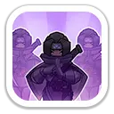
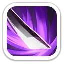
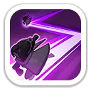
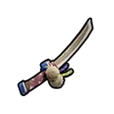
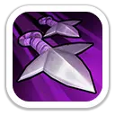
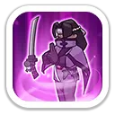

Убийца задней линии · усиление обычных атак · герой сборов
Рейна — мифический герой-копейщик 4 поколения с агрессивным набором навыков. В Освоении она атакует заднюю линию, уклоняется от обычных атак и обездвиживает опасные цели. В Экспедиции усиливает обычные атаки всей армии, даёт шанс уклоняться от ударов и добавляет копейщикам дополнительные атаки.
ПолучениеЗал героев, Ежедневные предложения, позднее дополнительные магазины и источники поколения
Главная специализацияPvP, сборы, Свирепый медведь, Арена
F2PПолезна, но требует ресурсов Зала героев и конкурирует с другими мифическими героями
ОсобенностьСильный первый навык Экспедиции для обычных атак всех войск
Характеристики
Максимальные характеристики героя.
4 106Атака героя
4 106Защита героя
41 070Здоровье героя
370.29%Атака копейщиков
370.29%Защита копейщиков
Главная ценность Рейны: её первый экспедиционный навык усиливает обычные атаки всех войск, поэтому она остаётся полезной не только в собственном марше, но и как герой присоединения к сбору.
Навыки Освоения
Используются в Арене, Освоении и боях героев.

Фантомное нападение
Урон по области
Рейна создаёт иллюзию и атакует вражеские силы с тыла, нанося урон по области.
300 / 330 / 360 / 390 / 420% атаки
Техника Исчезновения
Уклонение
При получении обычной атаки Рейна может сбить противника с толку иллюзией и полностью уклониться от урона.
Шанс 5 / 10 / 15 / 20 / 25%
Яд Демона
Урон и контроль
Накладывает иллюзию на вражескую цель, начиная с героя, наносит урон и обездвиживает её на 1,5 секунды.
100 / 110 / 120 / 130 / 140% атаки · обездвиживание 1,5 сек.
Навыки Экспедиции
Работают в маршах, сборах, гарнизонах и PvP между войсками.

Инстинкт убийцы
Усиление обычных атак
Рейна находит слабые места врага и увеличивает урон обычных атак всех войск.
+10 / +15 / +20 / +25 / +30%

Свифт Джайв
Уклонение войск
Даёт всем войскам шанс уклониться от обычной атаки противника.
Шанс 4 / 8 / 12 / 16 / 20%
Теневой клинок
Дополнительная атака копейщиков
Копейщики Рейны имеют 25% шанс провести дополнительную атаку.
120 / 140 / 160 / 180 / 200% урона · шанс 25%
Для сборов: «Инстинкт убийцы» — главный навык Рейны как участника чужого сбора. На 5 уровне он даёт стабильные +30% урона обычных атак всем войскам, без дополнительного шанса срабатывания.
Эксклюзивное снаряжение

Ниндзякен — Райкири
Эксклюзивное снаряжение усиливает личный урон Рейны и повышает её ценность в атакующих сборах.
+832Атака
+832Защита
+8 325Здоровье
+92.5%Смертоносность копейщиков
+92.5%Здоровье копейщиков

Силуэт УдараДаёт Рейне 40% шанс бросить дополнительный кунай обычной атакой и нанести ещё 45% урона от атаки.

Огненное ВторжениеНа 5 уровне повышает смертоносность войск в сборе на 15%.
Приоритет прокачки
Что сильнее всего раскрывает Рейну.
1Инстинкт убийцыГлавный навык для сборов и Свирепого медведя: усиливает обычные атаки всех войск.
2Теневой клинокСильно повышает личный вклад копейщиков в атакующий марш.
3Фантомное нападениеДля Арены и Освоения это главный источник взрывного урона по нескольким целям.
При ограниченных ресурсах: если Рейна нужна прежде всего для сборов, сначала важны экспедиционные навыки. Для Арены приоритет смещается в сторону «Фантомного нападения» и «Яда Демона».
Где использовать Рейну
Свирепый медведь
Очень хороший герой присоединения к чужому сбору благодаря стабильным +30% урона обычных атак всех войск.
Атакующие сборы
Сильна и как участник, и в собственном копейщицком марше. Эксклюзивное снаряжение дополнительно повышает смертоносность войск в сборе.
PvP
Усиливает обычные атаки, даёт армии шанс уклонения и добавляет копейщикам дополнительные удары.
Арена
Опасна для задней линии: высокий AoE-урон, обездвиживание и собственное уклонение от обычных атак.
Для звёзд требует ресурсов Зала героев или покупок.
Часть защитной ценности зависит от шанса уклонения.
Для полного урона копейщиков важен «Теневой клинок».
Поздние поколения постепенно вытесняют её как основного героя марша.
Стоит ли прокачивать Рейну?
Да, если вам нужен сильный герой сборов и копейщицкий атакующий герой 4 поколения. Даже когда её личные характеристики начинают уступать новым поколениям, «Инстинкт убийцы» сохраняет практическую ценность как стабильный командный бонус.
Источники
Механики и значения сверены по актуальным базам на 23 октября 2026 года.